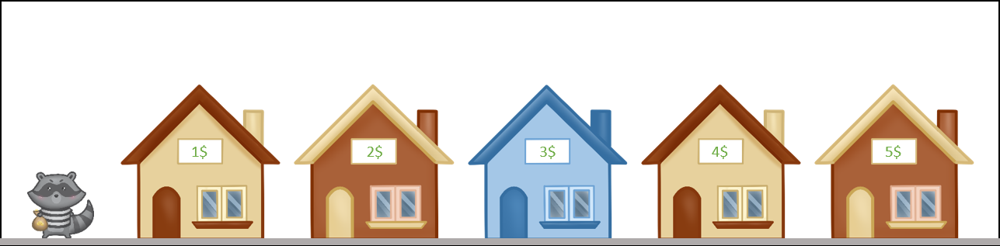
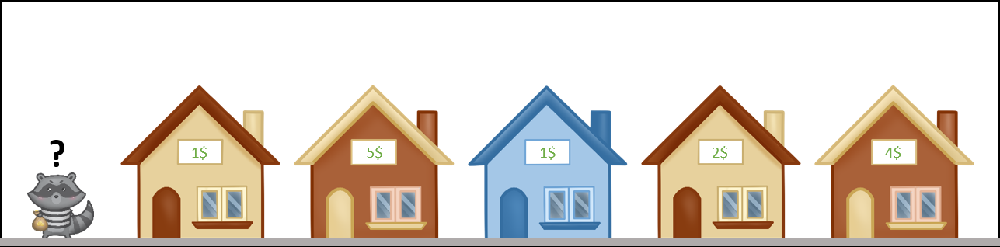
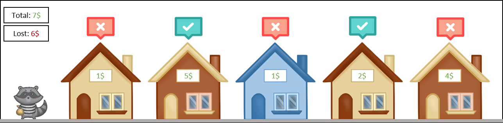
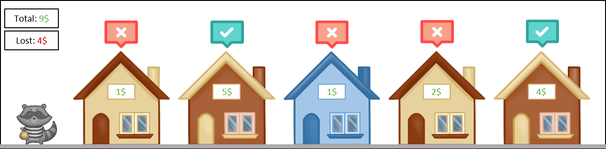
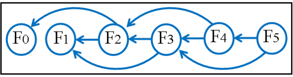
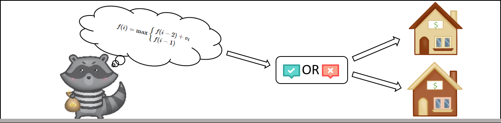

Динамическое программирование
Динамическое программирование - это метод, осуществляющий поиск оптимального решения задач.
Динамическим программированием называют особый математический метод оптимизации решений, специально приспособленный к многошаговым процессам. Многошаговый процесс - это процесс, развивающийся во времени и распадающийся на ряд «шагов». Однако метод динамического программирования используется и для решения задач, в которых время не фигурирует. Некоторые процессы распадаются на шаги естественно (например, процесс планирования хозяйственной деятельности предприятия на отрезок времени, состоящий из нескольких лет); многие процессы можно разделить на этапы искусственно.
Одна из особенностей метода динамического программирования состоит в том, что принятие решения по отношению к многошаговым процессам рассматривается не как единичный акт, а как целый комплекс взаимосвязанных решений. Эту последовательность взаимосвязанных решений называют стратегией. Цель оптимального планирования - выбрать стратегию, обеспечивающую получение наилучшего результата с точки зрения заранее выбранного критерия. Такую стратегию называют оптимальной.
Суть метода динамического программирования состоит в том, что вместо поиска оптимального решения сразу для всей сложной задачи сначала находят оптимальные решения для нескольких более простых задач, таким образом, уменьшая количество вычислений. Другими словами: динамическое программирование - это когда сложные задачи разбиваются на более лёгкие подзадачи, после чего ищутся повторения и уже на их основе задачи решаются и максимально оптимизуются для получения наилучших результатов за наименьшее время.
Одной из задач, с помощью которой можно будет наглядно продемонстрировать суть метода динамического программирования - является задача о воришке, которая будет рассмотрена ниже.
Задача о воришке и домах
Задача о воришке (англ. The House Robber Problem) - это теоретическая задача, по условиям которой, некий вор (в нашем случае хитрый енотик), собирается ограбить целый квартал домов, в каждом из которых стоит сигнализация. Наш енотик-воришка умеет отключать простую сигнализацию, но вот незадача! Недавно во всех домах улучшили систему защиты, теперь, когда в одном из соседних домов случаются неполадки с сигнализацией, система автоматически усиливает охрану, так что енотик-воришка не сможет войти в этот дом не включив сигнализацию. Смысл задачи в том, чтобы найти оптимальное решение по выбору домов, которые нужно ограбить воришке, чтобы получить максимальную прибыль и при этом не попасться.
Получается подобная задача состоит из следующих компонентов:
- Есть некоторое количество домов (то есть, массив какого-то n размера);
- В каждом доме есть есть какие-то ценности, и их стоимость во всех домах может различаться, а может и совпадать (массив заполнен какими-то различными числовыми значениям, которые могут и повторяться, прим. houses[0] = 4, т.е. в первом "доме" находится ценностей на 4 денежные единицы);
- Если выбирается один из домов, то его соседние дома для посещения закрыты (нельзя выбирать соседей слева и справа от выбранного элемента массива).
- При решении положительная прибыль, которую получит воришка должна быть больше упущенной или равною ей, иначе решение считается отрицательным (неверным).
Рассмотрим простой пример решения такой задачи. Пусть у нас дано 5 домов с возрастающей последовательностью стоимости ценностей в них, изобразим её следующим образом:

Воришка может зайти в дом только если он не был до этого в доме слева или справа от него. Поэтому, следуя самой простой логике, он начнёт с самого первого дома, пропуская затем второй и четвёртый дома, чтобы не привести в действие сигнализацию. Значит, мы получим следующую картину:

Как мы можем заметить в левом верхнем углу, в итоге (англ. total) воришка смог получить 9 денежных единиц, в результате в оставшихся домах находится имущество лишь на 6 денежных единиц, а значит выбор можно назвать положительным. Также, принимая в расчёт, что в данном случае стоимость имущества в домах неуклонно растёт от дома к дому, можно сделать вывод о том, что данное решение носит ещё и оптимальный характер. Но задачи не всегда так легко решаются, и это можно увидеть в следующем примере:

Теперь, когда стоимость имущества существенно разница, вне зависимости от расположения домов, наш изначальный способ, в котором мы начинали с первого дома и шли пропуская дом справа, может оказаться уже не таким эффективным и правильным, убедимся в этом:
Как видим, теперь воришке удалось украсть лишь 6 денежных единиц, а упущенная прибыль составляет 7 денежных единиц, отсюда следует, что наше решение носит скорее отрицательный характер, и требует пересмотр. Поэтому изменим наш метод решения таким образом, чтобы теперь воришка пропускал первый дом, начав со второго, и всё также пропускал дома справа от выбранных:

Ну чтож, мы получили обратную картину: теперь воришка получит 7 денежных единиц, упустив при этом всего 6 денежных единиц, прибыль положительна, значит задачу можно считать решённой? Да, но! То что наше решение положительно, ещё не значит что оно оптимально, а в математике оптимальность играет большую роль, и именно этим по сути и занимается динамическое программирование относящееся к предмету мат. методы. На следующей картинке мы можем увидеть, что правильное решение не всегда единственное, и всегда может присутствовать решение лучше и оптимальнее всех остальных, а иногда и вовсе несколько таких решений:

При подобном выборе воришка получит максимальную прибыль, при минимальной утрате. Это ещё раз доказывает, что в нашей жизни часто присутствует несколько правильных выборов, и какие-то из них выгоднее, лучше. Но в таком случае, как же нам понять, какой путь избрать? В рамках этой задачи, мы можем задать следующие вопросы:
- Но если домов большое множество, а не всего-лишь 5 штук?
- Как быть, если стоимость ценностей в домах будет сильно скакать, не придерживаясь никакой чёткой последовательности?
На помощь приходит один из видов метода динамического программировния - метод решения снизу-вверх:
Взгляните на эту диаграмму, где каждая подзадача показана только один раз. Это цепочка зависимостей задач. Если две разные проблемы зависят (базируются) от одной и той же подпроблемы, то на нее будут указывать две стрелки.

Такая точка зрения позволяет сделать сразу несколько важных заключений. Прежде всего, у нас есть O(n) подпроблем. Кроме того, эта диаграмма является направленным ациклическим графом, что означает:
- Есть узлы (задачи) и ребра (зависимости между ними);
- Рёбра имеют направление, одна подзадача зависит от другой;
- Нет циклов, значит нельзя начать с одной подзадачи и, следуя по стрелкам, вернуться к ней же.
В направленном ациклическом графе можно упорядочить вершины таким образом, что если пройти через них по очереди, вы будете всегда следовать направлению стрелок. Практически это означает, что можно расставить подзадачи таким образом, чтобы всегда иметь нужный результат еще до того, как он понадобится в более крупной задаче.
Есть еще одна важная вещь, которую мы можем вывести из этой диаграммы. Каждая подзадача зависит только от двух других. Если вы вычисляете F(n), то вам нужны только результаты F(n-1) и F(n-2), и совершенно не нужно F(n-10). То есть вы можете спокойно выбрасывать значения, которые не участвуют в текущем вычислении.
Самый первый и важный шаг в решении любой задачи динамического программирования – определение подпроблем.
Для любого i-того дома есть две альтернативы:
- Ограбить дом. Но после этого увеличить выгоду вы можете только в доме i-2, так как i-1 теперь для вас закрыт. В этом случае к текущей сумме добавляется значение Vi.
- Пропустить его. Теперь вы можете переходить к дому i-1, он доступен для ограбления. Но к текущей сумме ничего не добавляется.
Необходимо четко оформить вышеизложенные размышления в виде функции со следующими свойствами:
- Она должна идентифицироваться по некоторым целочисленным входным данным. Это позволит связать вход с вычисленным результатом и выполнять вычисления в определенном порядке;
- Решение должно быть легко извлекаемо, иначе функция не имеет для нас никакой пользы;
- Функция должна основываться сама на себе.
Это рекуррентное отношение – выражение одних членов последовательности через другие.
Таким образом, мы получаем следующую формулу для задачи о воришке:

f(i) – это максимальная прибыль, которую можно получить, ограбив дома с 0 по i. В конечном итоге мы получим значение f(n-1), где n – количество домов в квартале (если индексы начинаются с 0).
Если построить граф соотношений подзадач, то мы получим ту самую диаграмму с прошлой картинки. Каждый узел f(i) здесь зависит только от двух предыдущих: f(i-1) и f(i-2). Кроме того существует n подзадач: от f(0) до f(n-1). Следовательно мы можем решить проблему за O(n) времени, используя O(1) памяти. Другими словами – вычисляя подзадачи в порядке увеличения индекса и сохраняя два последних результата, выбирая затем наибольший из них.
Калькулятор для решения задачи о воришке